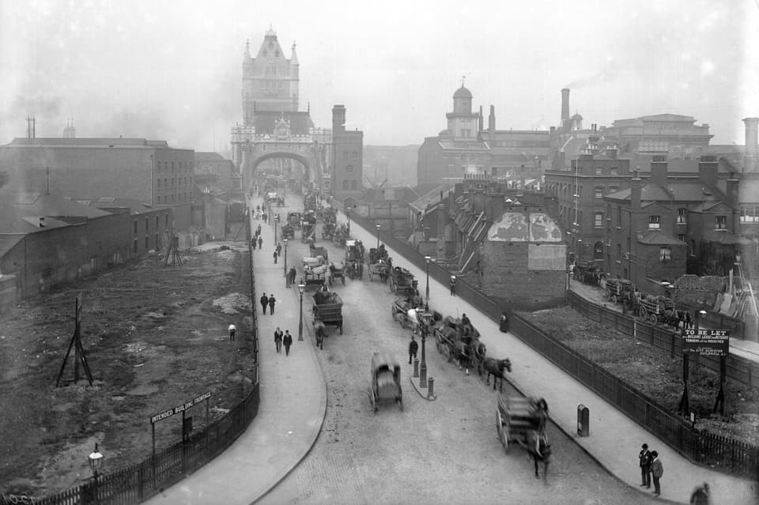
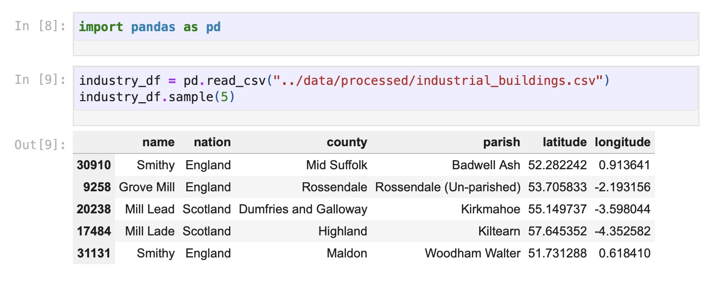
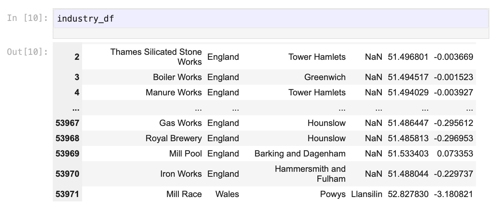
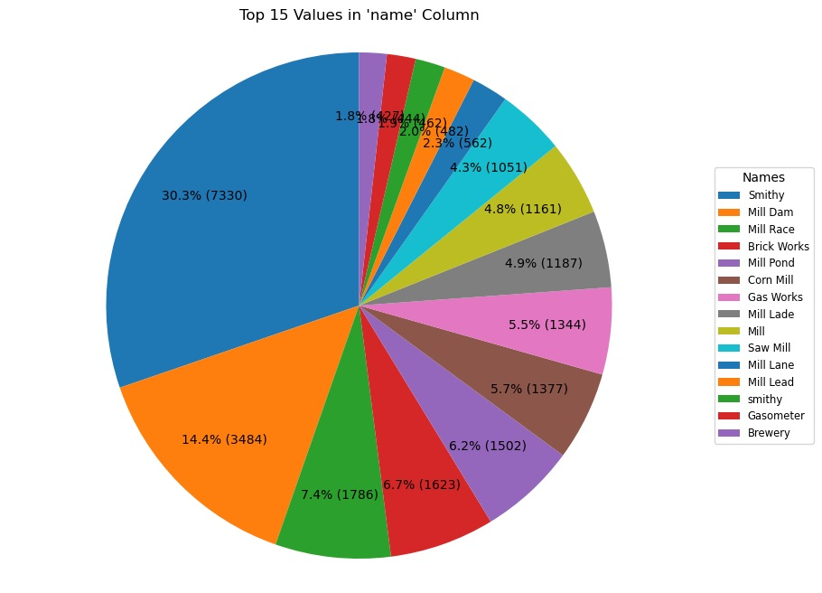
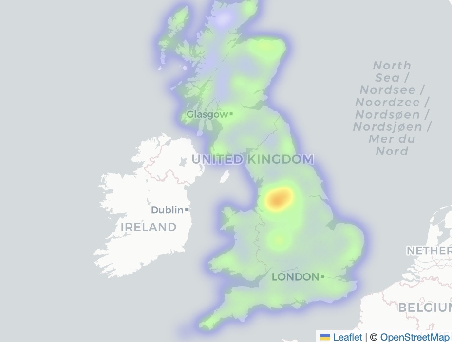
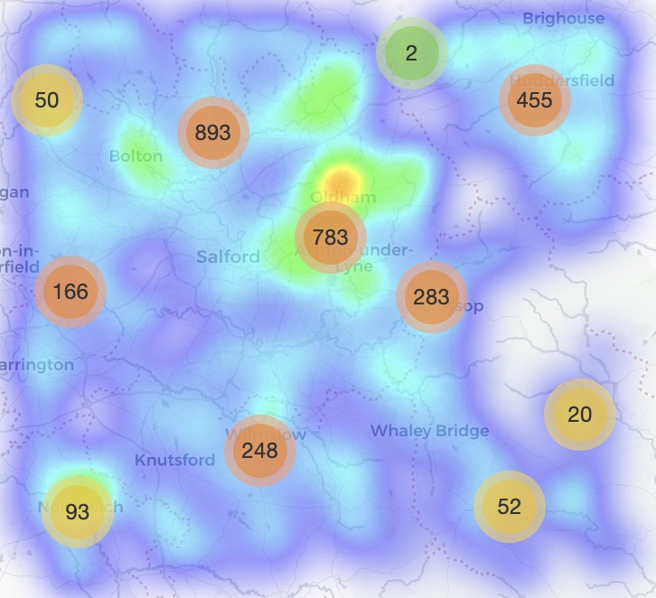
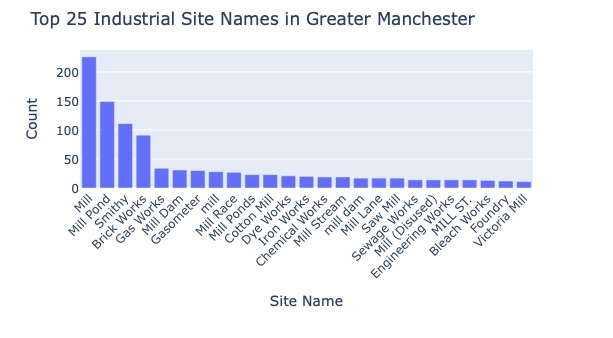
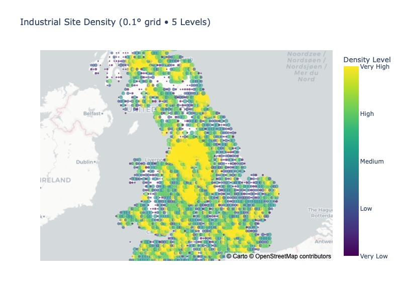
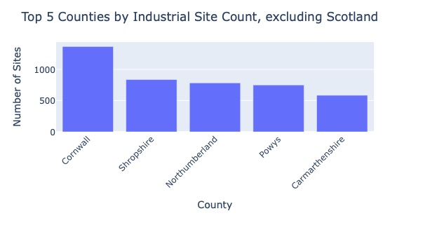
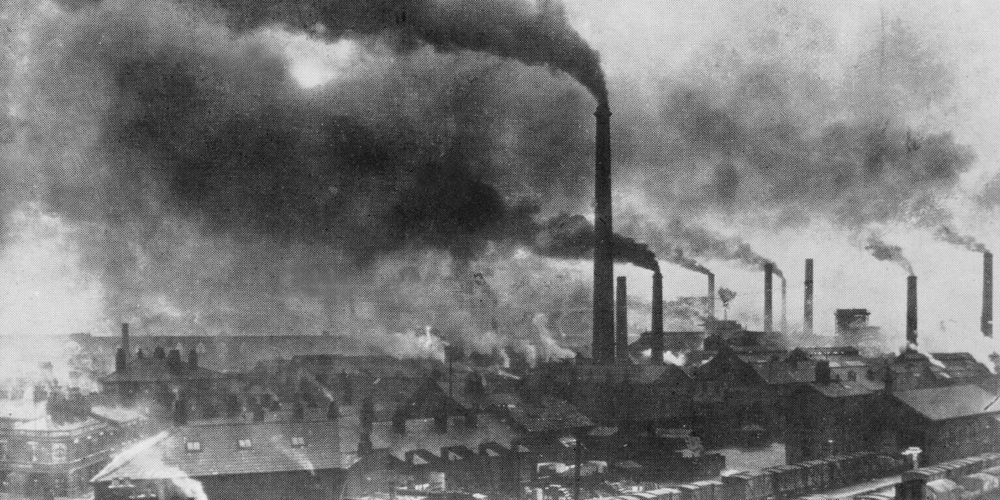

The British Ordinance Survey of 1888-1914
These are two seperate projects I did, a map created in ArcGIS, and a data biography using Python, all using a dataset focused on the British Ordinance Survey, a census-like spatial account of everything inside Great Britian at the turn of the 19th century. These projects were for GEOG 4080: Intro to GIS and HIST 4261: Working with Data, both attended at CU Denver. Data accessed via A Vision of Britain through Time, 2018.
Map of Industrial Sites in 1900's Manchester, UK. Created using ArcGIS
Digging into the British Ordinance Survey of 1888-1914 with Python
Introduction
In the late 19th century, technological and economic progress came to a head with what historians today call "the Second Industrial Revolution," a time period of large industrial growth spurred on by new manufacturing techniques such as the Bessemer process and the telegraph. One technique that drove this new evolution was the development and wide-scale production of interchangable parts, leading to a period of mass production. The colonial system was an essential cog in this shift as it provided the raw materials that were needed, and no colonial power benefitted more profoundly than the British Empire. The lives of humans have drastically changed as a result of these societal evolutions, and as a result, so has the land we inhabit. Our cities and farms have changed forever, and we are still dealing with the consequences. Understanding how and why our cities came to be is the first, and most essential, step in dealing with how we start to fix the places we inhabit.
Industrializing London during the turn of the 19th century.
Dating back to the 1700s, the British Ordanance Survey has taken on many forms. In the 21st century, it acts as a modern census, giving the government important demographic statistics, such as age, gender, race, employment, and more, similar to the US Census many Americans are familiar with. However, the original purpose was in Scotland, where the English military created maps to crack down on dissent in the aftermath of the Jacobite rebellions. The dataset I am exploring for this project will be the data collected in the Ordinance Survey of 1900, which was collected over the years 1888-1914. In this project, I will use this dataset to create maps and charts that will show the geographic distribution of industrialzation on the island of Great Britain. The goal is to paint a picture of how the land was changed, as well as where it was changed, to try and answer larger questions on historical urban development and effective land use. Link to original dataset. Please note dataset utilized for project is the second download link on page, as it has been cleaned and processed, titled COMPLETE GB1900 GAZETTEER.
Methodology
In today's world, the Ordnance Survey is an agency within the UK's Department for Science, Information, and Techonology, but historically, the work was collected by the government through the military. This fact, combined with the bloody origin story, tell a story that focus on control of the population, not informing them. So as a result, we must be aware that the dataset is not completely accurate, and does not include every data point. As referenced within some of larger themes from the work by D’Ignazio and Klein, Data Feminism, the data within the Ordnance Survey tells us more than what is collected. Building on their idea that "what gets counted counts," we must be aware that the team put in charge of this survey were tasked with focusing on property rights and taxation, as well as military purposes, which means there were places that were left off, whether intentionally or not.
All that being said, the dataset is absolutely huge. Like HUGE. Over two and a half million entries, more than any sane person could parse through. I need to especially thank everyone who originally collected, digitized, and organized the data, a group of over one thousand volunteers, led by researchers from the University of Portsmouth, the GB Historial GIS, the National Library of Scotland, among many other institutions within the UK. The scale of this data is so vast, that I am going to break it down into more manageable chunks of data. To do this process, I am going to filter through the place name value within the dataset and sort based on keyword, and isolate any buildings that have an industrial connotation. Building on the themes of Data Feminism, there might be some places missing from this data, as there could have been bribery or corruption in order to help capitalists avoid taxes, or local rivalries exploited to aquire business enemies' lands. On the other hand, there could be places that get flagged by the industrial keyword filter that had little to no industrial impact, or even could have been typos, overstating the real industrial output of certain areas.
 The over two million entries has been narrowed down to around 50 thousand, which is more manageable for making charts, graphs, and maps, all showing industrial impact on the cities of the UK. Reflecting the themes of our reference book once again, Data Feminism, we must be aware that this data has been filtered once again. The choices I, along with ChatGPT, made, actively left out aspects of the data due to our arbitrary cutoff. The pie chart below highlights the top 15 results of the 'name' column, showing the highest values of our filtered dataset.
Chart showing most frequent entries for type of building or feature.
Analysis
As this project aims to explore geographic data, I am going to do the bulk of the analysis section using maps created by Folium, a program within python that creates interactive maps from datasets. Exploring geographic data can reveal larger trends that are noticable visually, as well as helping show spatial relationships that are not immediately found out. Using the location data within the Ordnance Survey dataset can show how and where Great Britain developed, as well as highlighting trends.
Heatmap showing most frequent entries for type of building or feature, filtered for industrial use only.
This visualization uses the density of points within a dataset to build a heatmap, using color and opacity level to show the viewer the patterns that lie within the data. The heatmap here shows the density of buildings that we filtered through, showing a strong bias toward what is referred to as the English Midlands, focusing around the cities of Birmingham and Manchester. This supports the ideas of Romola Davenport, a researcher at the University of Cambridge, who claims that "coal provided cheap, abundant fuel for both industrial and domestic uses, and it drove the transformation of the British and then the global economy from an organic system dependent on sun and soil to our modern fossil fuel-based system of the significant coal fields." Building on that, many urban areas sprouted up next to these coal fields due to the high cost of transporting coal.
This region in particular became so prominent in the mining and manufacturing sector due to the proximity to the coastline, as transporting coal on ships was the most common way of moving the good. Davenport even goes on to note that "since the coalfields were often located in relatively inaccessible inland and upland areas, the growth of these areas spurred what has been called the ‘transport revolution’ – the rapid development of canals and road networks to connect the coalfields with the rest of the country." This transport bottleneck combined with the increasing specialization within various industries created an economic cycle where this region became the dominant player in this system. The interactable heatmap below shows the location and name of all data points within the Greater Manchester region.
Heatmap of Manchester, UK showing most frequent entries for type of building or feature, filtered for industrial use only.
On the other hand, this bar graph below shows the top results from the name column, while looking at the same data (just data in and near Greater Manchester). This helps us get a good idea of what the most popular type of industrial building was, and can explain why Manchester is so over represented on the first heatmap. Compared to the large cities during feudalism, where a prime location was on a large, navigable river in the center of a fertile heartland, the shift to industrialization put a focus on coal deposits and a larger quantity of smaller, faster moving streams to power a variety of buildings, most prominently, mills. (For my fellow Gen Zers, a mill refers to any place where a product gets broken down by different methods. These came in lots of different varieties, ranging from flour mills, textile mills, iron and steel mills, paper mills, and more.) It just so happens that the English Midlands are full of this type of geography.
Bar Chart of 25 most prevalent industrial site types in Greater Manchester.
Now, lets zoom back out and look at all of Great Britain once again. The heatmap created earlier was specifically designed to overemphasize the role of Manchester, a map that is accurate in its data, but could mislead a viewer. The heatmap aspect utilized in the previous maps does a decent job showing the spatial relationship present within data, however I knew that a better map could be made, keeping the focus on Manchester and it's surroundings, but also showing the true impact of the rest of the English towns. This relate back to our readings earlier in the semester, focusing around data visualization. It is one thing to know how to manipulate and analyze data, but making it into an effective visual element is a whole different skillset, and one I hope to master.
Dot Density map showing density of Industrial sites. (0.1 degree grid, 5 levels)
Britian's Coastal Shipping
This map still shows the impact of Manchester, but does a better job at showing how much impact the rest of the country still had on the industrial revolution. Most importantly, many coastal communities, small and large, show up on this map, hinting towards an industrial economy reliant on the ocean. In the work authored by Dr. Leigh Shaw-Taylor et al., it is noted that "the coastal trade was extensive, and made up the majority of ton miles in the important coal trade up to the late nineteenth century." This does not even mention the international trade that was powering the whole industrial engine, with tons and tons of raw materials coming in from British colonial possesions, such as cotton and wool, metals, lumber, and more, all to supply the growing manufacturing sector. Since many of these products were imported on ships, the best economic move was to place all of the manufactories near the coast, lowering transport costs in and out of the production zone. Coastal access was so critical that in at least one famous case, industrialists reshaped geography to obtain it. The Manchester Ship Canal, opened in 1894, is an artificial waterway 36 miles from the Mersey estuary going to inland Manchester, allowing that city to become accessible to large ocean-going vessels, despite being 40 miles from the sea.
Bar Chart of the 5 counties with the most industrial sites.
Conclusion
The time frame in which this data was collected might have been the golden age of the English Midlands, as further transportation innovations shifted the economic power back toward London post WWI, and that divide has only deepened in the following decades. Despite economic growth over this time, certain areas have not equally benefited from redevelopment. The city faces issues like affordable housing shortages, with over 15,000 applicants on the social housing waiting list. This is not all, as the legacy of industrial pollution continues to affect Manchester. Air quality remains a concern, with fine particulate matter levels often exceeding health guidelines, showing how our past can still have outsized influence in our lives today. However, this story has a good ending, as former industrial districts like Ancoats and Castlefield have undergone significant urban renewal. Ancoats, once dubbed "the world's first industrial suburb," has been revitalized into a vibrant area featuring residential spaces, eateries, and cultural venues, while preserving much of its historical manufacturing architecture. As for how Manchester looks today? The city has shifted from traditional manufacturing to sectors such as digital technology, finance, and creative industries. This diversification has spurred job creation and attracted investment, contributing to Manchester's economic resilience, all while adding to the story of the world's first industrial city.
Factories polluting the air, land, and water.
In 2008, a trend opposite of the one observed in this project was forcing many English to relocate, specifically out of the English Midlands, and towards the centralized metropolis of London. As a result of this demographic shift southward, journalist Tim Leunig noted that "There’s no altering geography, and some of our towns just aren’t in the right place any more." I am sure many in the late 1800s thought the same of their towns being influenced by industrial trends changing their landscape in front of their own eyes.
Bibliography
The associated GitHub repository for this project can be accessed by clicking here!.
Clifton, Katy. 2018. “Historic Black and White Images Show Iconic London Landmarks in the Early 1900s.” London Evening Standard, September 15, 2018. Link.
A Vision of Britain through Time. 2018. “Data: Great Britain 1900.” University of Portsmouth/Great Britain Historical GIS Project. Link.
Davenport, Romola. 2024. “The First Urban Society.” Top of the Campops: 60 Things You Didn’t Know about Family, Marriage, Work, and Death Since the Middle Ages. The Cambridge Group for the History of Population and Social Structure, October 31, 2024. Link.
Hatton, Tim. 2017. “Air Pollution in Victorian-Era Britain—Its Effects on Health Now Revealed.” The Conversation, November 14, 2017.Link.
The Cambridge Group for the History of Population and Social Structure. 2016. “Coal Prices and Trading Costs.” In Transport, Urbanization and Economic Development in England and Wales c.1670–1911. Page last updated May 24, 2016.Link.
The Editors of Encyclopaedia Britannica. 1998. “Manchester Ship Canal.” Encyclopaedia Britannica, July 20, 1998. Link.